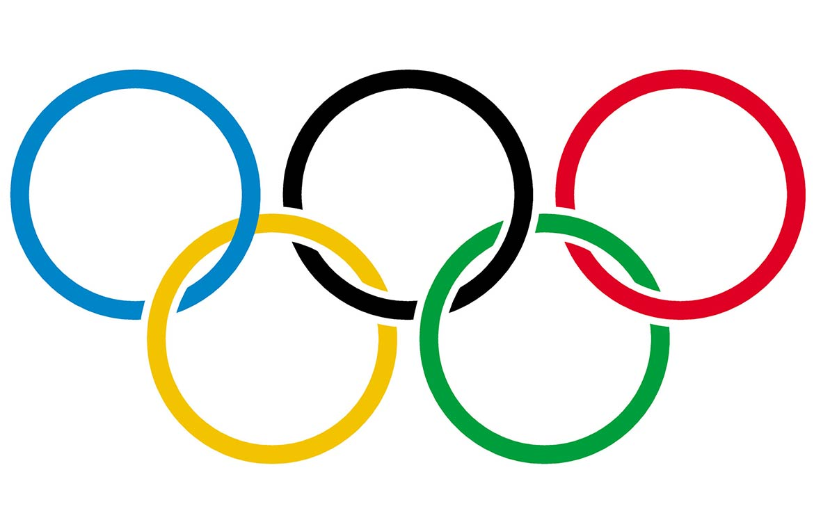

Olimpiai sportágnak nevezzük a nyári és a téli olimpiai játékok versenyszámait. A jelenlegi olimpiai program 35 sportot tartalmaz 53 szakággal, magyarul általában erre az utóbbira használjuk a sportág kifejezést. A nyári olimpiai játékok 28 sportot és 38 szakágat tartalmaz körülbelül 300 versenyszámmal, a téli olimpiai játékok pedig 7 sportot 15 szakággal és körülbelül 80 versenyszámmal. A versenyszámok száma és típusa olimpiáról olimpiára változhat. Minden olimpiai sportot egy-egy nemzetközi szövetség képvisel.
Az első ókori olümpiai játékokat i. e. 776-ban tartották a görögországi Olümpiában, és egészen i. sz. 393-ig rendezték meg, de ekkor Nagy Theodosius császár a kereszténység végleges megszilárdítása érdekében minden pogány rendezvényt betiltott, így az olümpiai játékokat is beszüntette – közel 11 évszázados fényes múlt után. Az olimpiai játékok felélesztésének a gondolata Panajótisz Szúcosz görög költő és újságíró fejében fordult meg először 1833-ban, amit a „Halottak párbeszéde” című versében is megfogalmazott. Az első újkori, olimpiára emlékeztető rendezvény Evangélisz Zápasz anyagi támogatásával 1859-ben jött létre. Ő állta a Pánhellén Stadion felújítási költségeit is, és ott rendezték meg a hasonló 1870-es és 1875-ös játékokat is.
A Nemzetközi Olimpiai Bizottság (NOB) 1894-ben jött létre a francia Pierre de Frédy, Baron de Coubertin kezdeményezésére. A NOB lett az „olimpiai mozgalom” szíve, az egymás után alakuló nemzeti olimpiai szervezetek összefogója. Ahogy az olimpiai mozgalom nőtt, kialakult a szerkezete, összetettsége. Az olimpia hármas jelszava: Citius Altius Fortius (Gyorsabban Magasabbra Erősebben) lett. Az egymást követő olimpiai játékokon folyamatosan emelkedett a részt vevő nemzetek száma, mígnem a létező országok nagy része már képviselte magát az eseményen. A híradástechnika fejlődése nyomán a közönség is egyre nagyobb érdeklődéssel fordult a játékok felé, így vált az olimpia a legnézettebb televíziós sporteseménnyé, de a helyszíneken is mindig tömött lelátók előtt zajlanak a versenyek. Az olimpiai mozgalom fejlődése egy idő után már az esemény megrendezésében okozott gondokat, ezért a NOB a megrendezésre kerülő sportágak számát és a részt vevő sportolók létszámát is korlátozni kénytelen, ez utóbbi miatt vezették be a kvalifikációs rendszert. A 2008-as nyári, a pekingi játékokon összesen 28 sportág 34 szakágának 302 versenyszáma szerepelt, míg a 2010-es téli, a vancouveri olimpián 7 sportág 15 szakágának 86 versenyszámát bonyolították le
